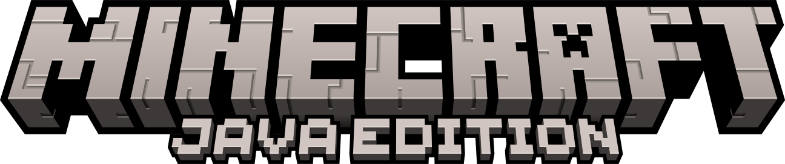
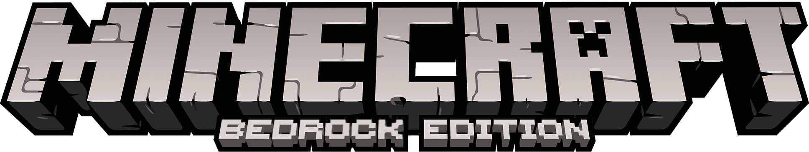
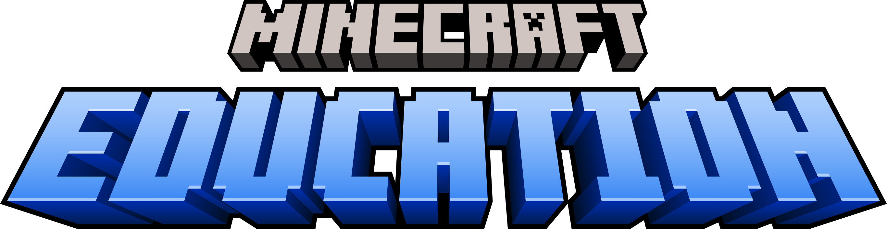

Versiones
Explora las diferentes versiones de Minecraft a lo largo de los años.
-
Minecraft: Java Edition
La versión original de Minecraft, desarrollada por Mojang Studios para Windows, macOS y Linux
Más información -
Minecraft: Bedrock Edition
Disponible en múltiples plataformas como Windows 10, consola y móviles, permite el juego cruzado.
Más información -
Minecraft: Education Edition
Es una edición educativa de Minecraft diseñada específicamente para el uso en el aula.
Más información